内置 image_gen 生成。按实际画面复杂度人工复核：低 052/058，中 053/055/056/059，高 051/054/057/060。以下为 768×432、WebP 质量 30 预览。源图未接入游戏；B 展示全部候选。
三座沙塔、城墙、工具、脚印与海岸远景形成多层搜索。
兔橙巾变绿；红铲变蓝；蓝星桶变紫；黄心桶变绿；紫圆模变红；绿方模变蓝；蓝旗变橙；粉贝壳变紫；橙耙变绿；白月标变白花
单角色、单城门和一辆小车，大面积天空与沙地留白。
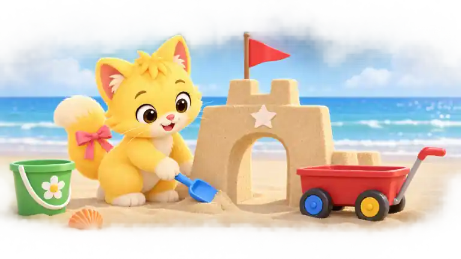
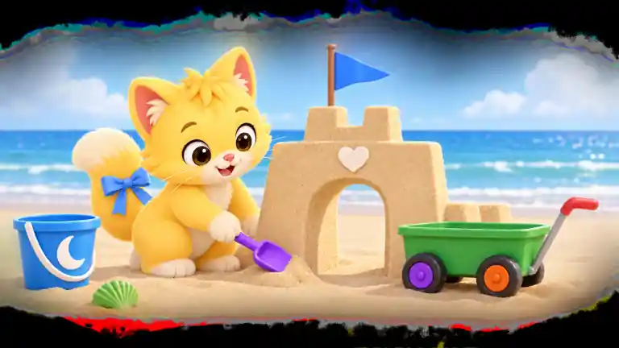
猫粉尾饰变蓝；蓝铲变紫；红旗变蓝；红车变绿；左蓝轮芯变紫；右黄轮芯变橙；绿桶变蓝；桶白花变白月；门白星变白心；橙贝壳变绿
双角色围绕一座沙塔，工具数量有限，海岸背景适中。
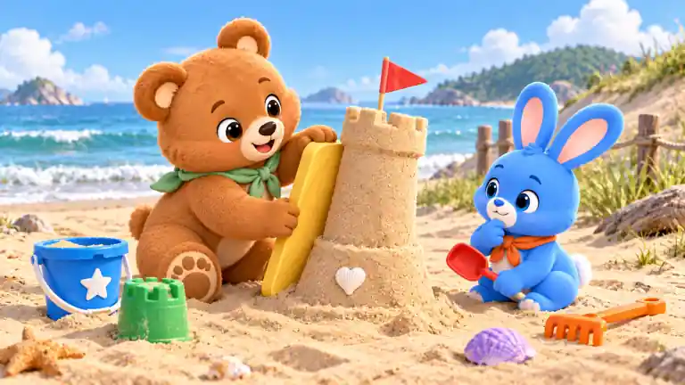
熊绿巾变紫；兔橙巾变蓝；黄撑板变蓝；红铲变紫；蓝星桶变绿；绿模变橙；紫贝壳变黄；红旗变蓝；橙耙变绿；塔白心变白星
双角色、分叉沙路、桥、双塔、大贝壳与密集海滩细节构成多区搜索。
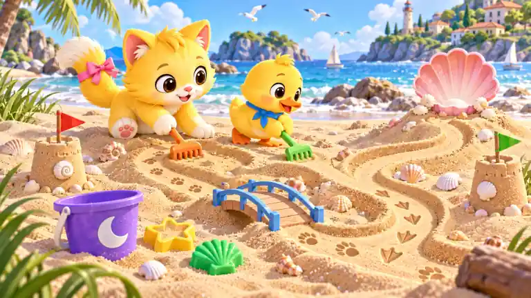
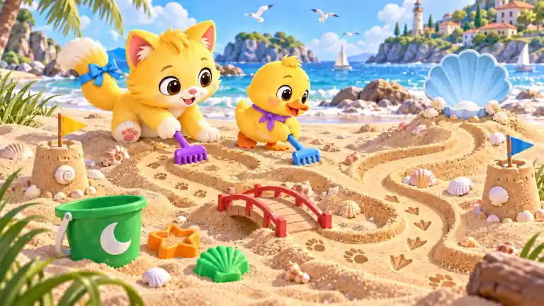
猫粉尾饰变蓝；鸭蓝巾变紫；蓝桥变红；左红旗变黄；右绿旗变蓝；紫月桶变绿；橙耙变紫；绿耙变蓝；粉贝壳湾变浅蓝；黄星模变橙
天空留白充足，但双角色、长城墙、双塔旗与车辆使实际结构达到中档。
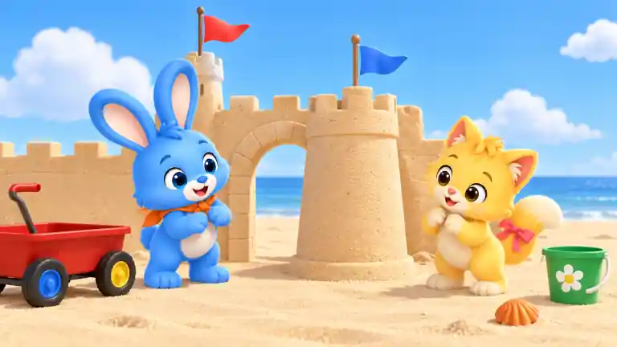
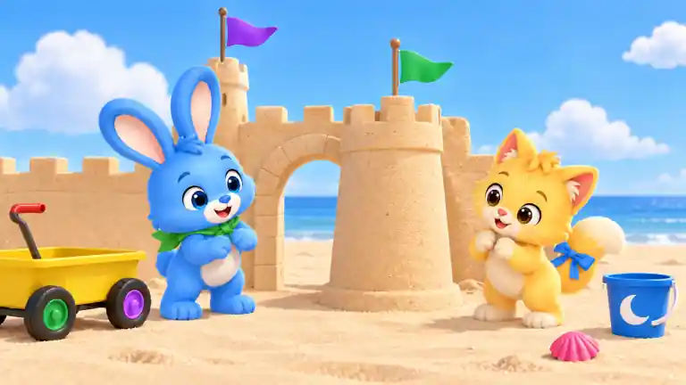
兔橙巾变绿；猫粉尾饰变蓝；后塔红旗变紫；前塔蓝旗变绿；红车变黄；左蓝轮芯变绿；右黄轮芯变紫；绿桶变蓝；桶白花变白月；橙贝壳变粉
单角色和中央沙城为主，三塔、宽基座与四件工具形成适中搜索量。
熊绿巾变紫；黄撑板变蓝；中红旗变橙；左蓝旗变紫；右绿旗变黄；紫星桶变绿；橙耙变蓝；蓝方模变红；粉贝壳变紫；墙白心变白星
多格贝壳托盘、图鉴、放大镜、野餐垫及远景沙城带来高密度细节。
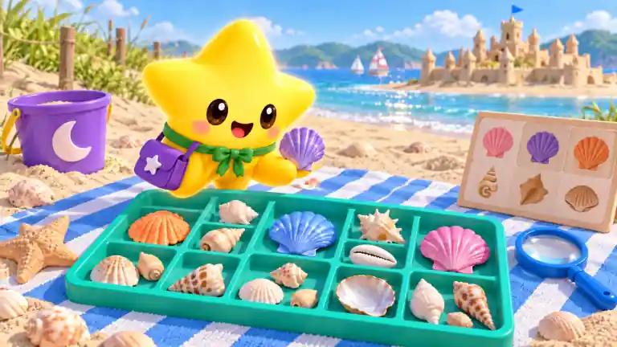
星伴蓝领结变绿；棕挎包变紫；蓝托盘变青绿；红放大镜柄变蓝；黄白垫变蓝白；左粉贝壳变橙；中紫贝壳变蓝；右橙贝壳变粉；绿月桶变紫；远城红旗变蓝
双角色之外仅有一段矮墙、一个门洞、小车与桶，留白显著。
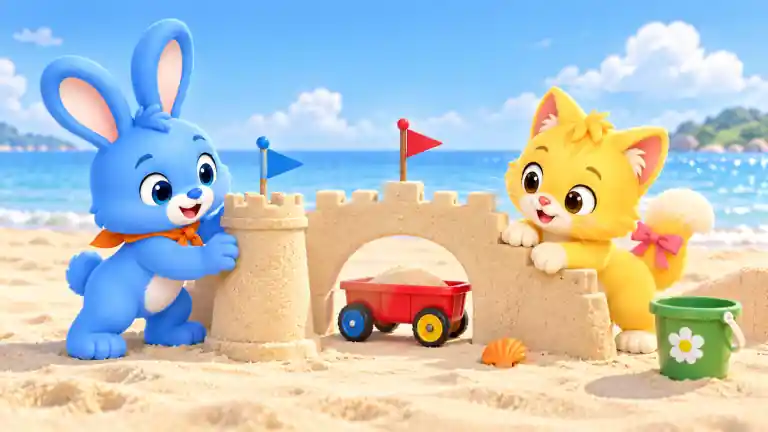
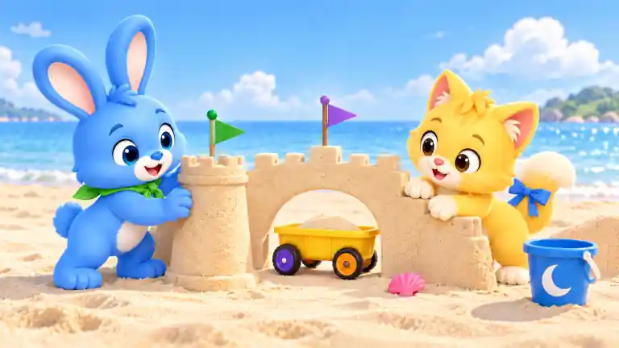
兔橙巾变绿；猫粉尾饰变蓝；右红旗变紫；左蓝旗变绿；红车变黄；左蓝轮芯变紫；右黄轮芯变橙；绿桶变蓝；桶白花变白月；橙贝壳变粉
双角色、城门、双塔和小车集中在中央，装饰较丰富但区域清晰。
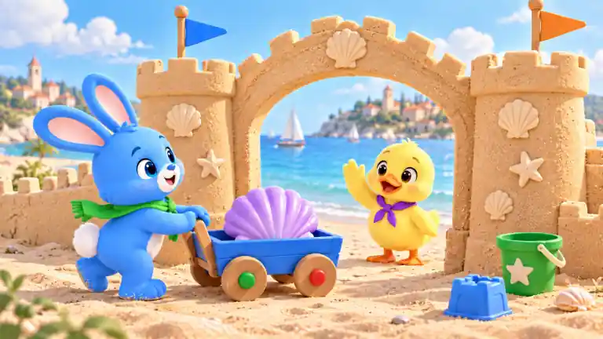
兔橙巾变绿；鸭蓝巾变紫；红车变蓝；左蓝轮芯变绿；右黄轮芯变红；粉货贝壳变紫；左红旗变蓝；右绿旗变橙；紫星桶变绿；橙方模变蓝
双角色、画册、毛巾、两桶工具、遮阳伞、沙城及海岸远景形成丰富层次。
猫粉尾饰变蓝；熊绿巾变紫；黄白伞变蓝白；画册蓝边变绿；红画笔变紫；蓝白巾变绿白；左紫星桶变红；右绿月桶变蓝；沙城红旗变橙；近处粉贝壳变紫